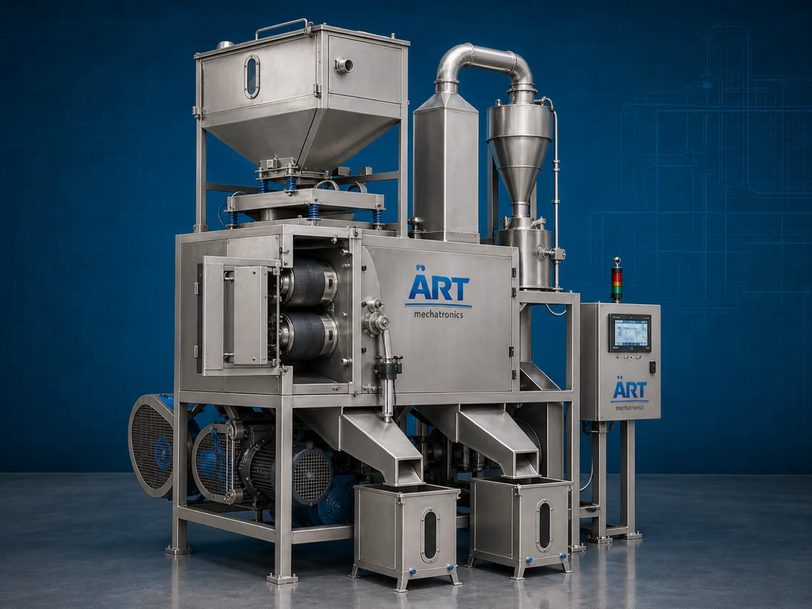

Dehusking Machine (Industrial Husk Removal & Decortication System)
A Dehusking Machine, also known as a Husk Removal Machine, Decortication Machine, Grain Dehusker, or Industrial Husk Separation System, is an advanced industrial processing solution designed for husk removal, shell separation, grain cleaning, decortication, outer layer removal, kernel extraction,…

About the Dehusking Machine
Dehusking systems are widely used for: ✔ Rice husk removal operations ✔ Pulse dehusking processes ✔ Seed decortication ✔ Grain cleaning and separation ✔ Coffee bean dehusking ✔ Nut and millet processing ✔ Agro product cleaning ✔ Industrial food preparation operations
The machine improves: ✔ Product purity ✔ Kernel recovery efficiency ✔ Processing productivity ✔ Product consistency ✔ Labor reduction ✔ Agro processing quality ✔ Industrial hygiene standards
Industrial dehusking machines use: ✔ Precision friction and roller systems ✔ Impact and abrasion mechanisms ✔ Vibratory and airflow cleaning systems ✔ PLC and HMI automation controls ✔ Conveyor synchronized material handling systems
to automatically remove husks and separate kernels with superior accuracy and high production efficiency.
Dehusking machines are widely used in industries such as:
Rice processing industries Pulse processing industries Seed processing industries Agro industries Food processing industries Coffee processing industries Spice industries Biomass industries
where clean grain processing, efficient husk separation, and high-speed industrial production are essential.
The machine is highly suitable for: ✔ Rice dehusking operations ✔ Pulse and grain processing ✔ Seed decortication systems ✔ Coffee bean cleaning ✔ Millet and spice processing ✔ Industrial agro automation systems
ART Mechatronics offers high-performance dehusking machines, engineered for continuous industrial operation, hygienic agro processing, precision husk separation, and reliable long-term industrial productivity.
Working Principle of Dehusking Machine
- 1. Material Feeding & Loading Raw grains, pulses, seeds, or agro products are automatically fed into dehusking chamber for processing operation.
- 2. Husk Separation & Dehusking Process Machine automatically removes outer husks and shells using friction rollers, abrasion systems, impact mechanisms, and airflow separation technology.
Intelligent synchronization ensures smooth product handling and accurate husk removal operations.
- 3. Dehusking & Cleaning Operation Machine handles processing of: ✔ Rice ✔ Pulses ✔ Millets ✔ Seeds ✔ Coffee beans ✔ Nuts ✔ Agro products ✔ Industrial food materials
accurately and continuously.
- 4. Material Cleaning & Classification Process Machine performs: Husk removal Shell separation Kernel extraction Impurity removal Material grading Product cleaning
for efficient industrial agro and food processing operations.
- 5. Intelligent Automation & Hygiene Integration Optional systems include: Dust extraction systems Air separation systems Automatic feeding systems Food-grade stainless steel construction Safety guarding systems
- 6. Finished Product Discharge Processed kernels and cleaned materials discharged automatically for: Packaging operations Polishing systems Storage silos Export shipment handling Further food processing
Types of Dehusking Machines
- 1. Rice Dehusking Machine Designed for: ✔ Rice milling and grain cleaning applications
- 2. Pulse Dehusking Machine Suitable for: ✔ Dal milling and pulse processing systems
- 3. Seed Decortication Machine Uses: ✔ Seed husk removal and agro processing operations
- 4. Coffee Bean Dehusking Machine Designed for: ✔ Coffee processing and bean cleaning systems
- 5. Servo Driven Dehusking Machine Suitable for: ✔ Precision high-speed agro processing operations
- 6. Fully Automatic Dehusking System Designed for: ✔ Complete industrial agro processing automation lines
Industries Using Dehusking Machines
🌾 Rice Processing Industry Rice husk removal, grain cleaning, and milling systems. 🫘 Pulse Processing Industry Dal milling, pulse cleaning, and husk separation systems. 🌻 Seed Processing Industry Seed decortication, agro cleaning, and grain preparation systems. ☕ Coffee Processing Industry Coffee bean cleaning and outer layer removal operations. 🍅 Food Processing Industry Food ingredient preparation and industrial grain processing systems. 🛒 FMCG Food Industry Packaged grain and pulse ingredient preparation systems.
Features & Advantages
✔ High-speed automatic dehusking operation ✔ Accurate and reliable husk separation systems ✔ Hygienic stainless steel industrial construction ✔ PLC and automation control systems ✔ Improves kernel recovery and processing consistency ✔ Reduces manual dehusking dependency ✔ Supports multiple grains, pulses, and agro materials ✔ Reliable long-term industrial performance ✔ Smooth integration with industrial food production lines
Technical Highlights
Machine Type: Dehusking machine Industrial husk separation system Agro decortication machine Material Compatibility: Rice Pulses Millets Seeds Coffee beans Nuts Agro products Integration: Friction roller systems Air separation systems Automatic feeding systems Dust extraction systems Features: PLC control system Touchscreen HMI Stainless steel construction Material grading systems Continuous duty operation Applications: Husk removal Kernel extraction Grain cleaning Agro processing Pulse milling Seed preparation Automation: Semi-automatic Fully automatic industrial systems
Turnkey Dehusking Solutions
ART Mechatronics offers: Complete dehusking systems Automatic husk removal solutions Industrial agro cleaning systems Food conveyor integration systems Installation & commissioning After-sales service & AMC
Why Choose Art Mechatronics
Expertise in industrial agro and food processing systems Customized dehusking solutions for multiple industries High-performance and hygienic separation technology Advanced PLC and automation systems Proven industrial processing performance across sectors
Applications
Rice Processing Plants Pulse Processing Facilities Seed Cleaning Industries Coffee Processing Units Agro Product Processing Plants Industrial Food Processing Industries
Related Process Equipment machines
Get pricing & specs for the Dehusking Machine
Share the product, target capacity, current process and plant location. These details help our engineers discuss the right machine or line configuration.
One partner, from design to start-up
ART Mechatronics designs, manufactures, installs and commissions your Dehusking Machine solution with regional presence in India, UAE and Thailand.